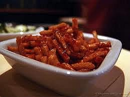

Sambal Goreng Kering Kentang

Bahan:
- ½ kg kentang/tempe
- minyak goreng secukupnya
Bumbu:
- 10 buah cabai merah
- 10 buah bawang merah
- 3 siung bawang putih
- 2 potong lengkuas
- 3 lembar daun salam
- 1 batang serai
- 2 mata asam jawa
- ½ sdm garam
- ½ gelas/100 gram gula merah
- 1 sdt. Terasi
Cara Membuat:
- Iris kentang kecil-kecil, lalu goreng hingga kering dan berwarna kuning kecoklatan.
- Iris halus cabai merah. Goreng hingga kering , angkat, sisihkan.
- Haluskan bawang merah, bawang putih, garam, gula merah dan terasi. Tumis bersama bumbu lainnya hingga harum aromanya.
- Masukkan kentang, aduk rata , sesudah kering, angkat dan siap
dihidangkan.